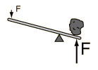
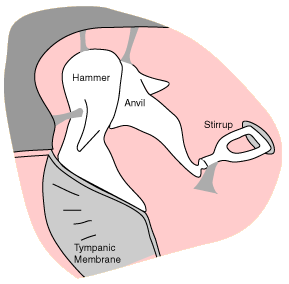
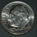
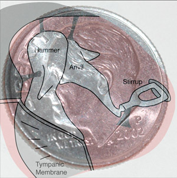

The Ossicles
The three tiniest bones in the body form the coupling between the vibration of the eardrum and the forces exerted on the oval window
of the inner ear. Formally named the malleus, incus, and stapes, they are commonly referred to in English as the hammer, anvil, and stirrup.
With a long enough lever, you can lift a big rock with a small applied force on the other end of the lever. The amplification of force can be changed by shifting the pivot point.
|  |
|

|
The ossicles can be
thought of as a
compound lever
which achieves a
multiplication of
force. This lever
action is thought
to achieve an
amplification by a
factor of about three under optimum conditions, but can be adjusted by muscle action to actually attenuate the sound signal for protection against loud sounds. |
A physiology book describes the ossicles as small enough to fit collectively on a U.S. dime. The image to the right actually makes the ossicles a bit too large - they may be half that large in some persons.  |
 |
|
Index
Hearing concepts |